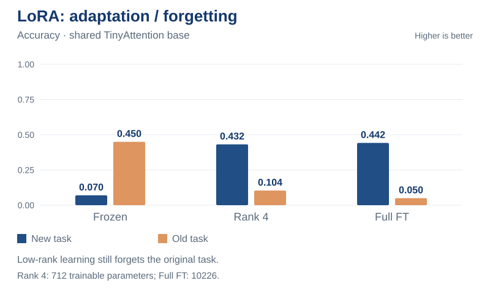

Introduction
使用本仓库 TinyAttention 基座进行低秩适配，原实验比较 rank 1 / 4 与全量微调。深化实验重构 q、v 和输出头的实际 A/B 增量，检查与 merged 导出的一致性，并在相同新前缀上分别评价旧规则与新规则。参数强度扫描是诊断，而不是在测试上选最优配置。
Overview

Method
固定 rank 4，六档适配强度；160 个新前缀，不外推大模型显存或生产收益。
方法与模型代码、训练协议、适用边界分别保留在项目文档中。此处为公开说明，不代替完整复现步骤。
Experimental Results
深化批次的一个完整条件对照如下。条件按名称顺序取首项，不按最好分数挑选；全部条件、失败与逐条记录在 Depth Study 中可复查。
| Model / Policy | Condition | Records | Success / Correctness | NLL |
|---|---|---|---|---|
| alpha_0 | new_rule | 160 | 0.0875 | 5.3719 |
| alpha_0.25 | new_rule | 160 | 0.1437 | 3.6531 |
| alpha_0.5 | new_rule | 160 | 0.2313 | 2.4914 |
| alpha_0.75 | new_rule | 160 | 0.3688 | 1.8504 |
| alpha_1 | new_rule | 160 | 0.4188 | 1.4943 |
| alpha_1.5 | new_rule | 160 | 0.1688 | 2.8083 |
Condition: new_rule。表格数值直接读取 artifacts/depth/results.json；记录包含相关扰动、重复计时或历史再分析，不等于独立样本规模。不同项目的 Success / Correctness 定义不同，不能横向当作统一准确率。完整实验协议：Fixed rank4 q/v/head adapter delta, six strength settings. Same newly authored160 prefixes evaluated under old/new rules separately. Strength sweep not selected on test.
Interactive Demo
浏览器执行已导出的模型参数或显示真实本地运行记录。自定义输入没有预设真值，不重训、不调用远程大模型，也不操作设备。
Limitations & Reproducibility
固定 rank 4，六档适配强度；160 个新前缀，不外推大模型显存或生产收益。 实验为 AI 辅助实现，本人独立理解、修改和复核贡献如实记录。模型名称、机制复现和静态发布不代表原创论文或生产能力。